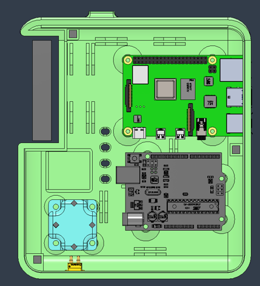
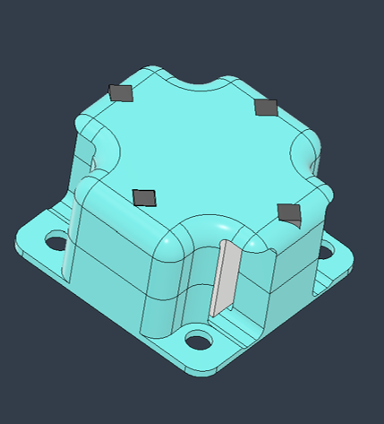
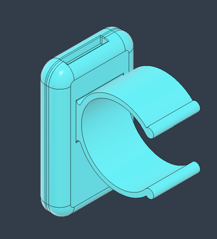
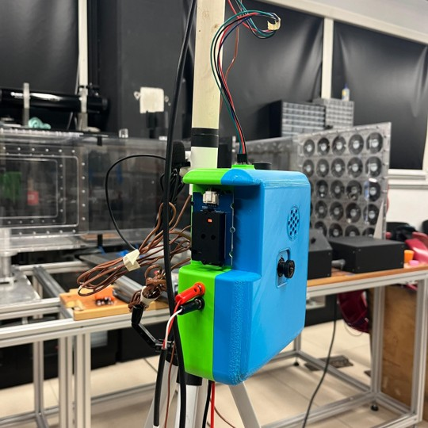
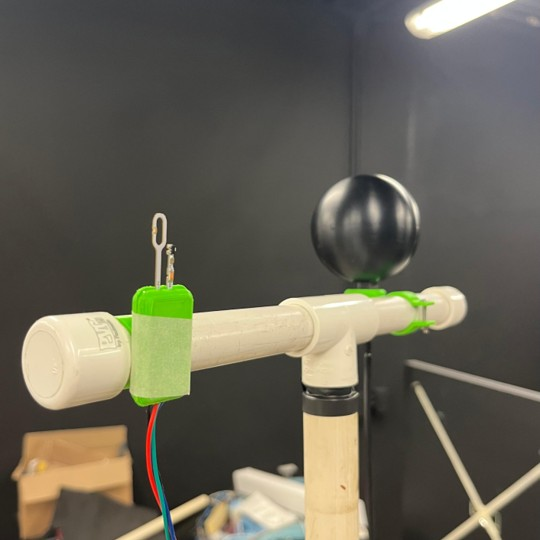

Desarrollo e implementación con tecnologías libres de un dispositivo portátil para evaluar el confort térmico, lumínico y acústico en interiores
Tesis para obtener el título de Ingeniero en Energías Renovables
Descripción del dispositivo













Toda la documentación, diseños CAD/STL, manuales, lista de materiales y código del DTHIS-C están disponibles en un repositorio público de GitHub.
El repositorio, bajo licencia MIT, permite acceder, usar y modificar el proyecto, garantizando su reproducción, adaptación y mejora por la comunidad.

Wind Sensor
Para calibrar el Wind Sensor se empleó como referencia el WindMaster, anemómetro ultrasónico tridimensional.
Durante 1 hora se registraron datos a 1 Hz, con el Wind Sensor montado en la parte superior central del WindMaster sin interferir en sus mediciones. En campo abierto, el Wind Sensor midió voltaje, que se correlacionó con la velocidad del viento del WindMaster para obtener la ecuación de calibración (voltaje–m/s).

El Wind Sensor emplea anemometría por filamento caliente: un elemento resistivo se mantiene a mayor temperatura que el aire, y la velocidad del viento se calcula según el voltaje requerido para compensar la pérdida de calor.
En una campaña adicional se detectó un desfase sistemático de 1.1621 V en condiciones de viento nulo (0 m/s). Para aislar la respuesta al viento, este valor se restó de cada lectura antes de la calibración, de modo que la señal procesada reflejara únicamente la influencia del viento sobre el filamento.
Según el fabricante, la relación entre la velocidad del viento (WS), el voltaje corregido y la temperatura sigue la siguiente ley de potencia:
\[\begin{align} WS = a \times (\text{Voltaje})^b \times (\text{Temperatura})^c \end{align}\]Para facilitar el ajuste mediante técnicas de regresión, se aplicó una transformación logarítmica a ambos lados de la ecuación, lo que permitió convertir el modelo en una forma lineal:
\[\begin{align} \ln(WS) = \ln(a) + b \times \ln(\text{Voltaje}) + c \times \ln(\text{Temperatura}) \end{align}\]Se aplicó un remuestreo de 10 segundos a los datos de voltaje del Wind Sensor, ya que mostró mayor correlación (0.8637) con las mediciones del WindMaster. Con esos datos se realizó una regresión lineal, obteniendo la ecuación de calibración.
\[\begin{align} WS = 26.3431 \times (\text{Voltaje})^{1.4273} \times (\text{Temperatura})^{-0.7631} \end{align}\]| Fase | EM [m/s] | EAM [m/s] |
|---|---|---|
| Antes de calibrar | -0.01 | 0.06 |
| Después de calibrar | -0.00 | 0.05 |
Fisheye
En el caso de la iluminancia, no se realizó ningún proceso de calibración o referenciación. La calibración no aplica en este caso, ya que el método no depende de la respuesta espectral absoluta de la cámara, sino de un proceso computacional que transforma imágenes HDR en estimaciones de iluminancia mediante modelos de luminancia integrados en Radiance.
Se empleó la cámara Arducam 5MP OV5647 Ultra Wide Angle en conjunto con el software Radiance y se desarrolló un script que calcula la iluminancia total mediante la integral de los valores de luminancia que conforman el mapa generado a partir de las imágenes capturadas
Los pasos a seguir fueron:
- Crear una imagen HDR fusionando fotografías con distintas exposiciones para capturar la máxima información luminosa.
- Aplicar una escala de false color a la HDR para identificar valores de luminancia en cada punto.
- Calcular la integral del mapa generado para determinar la iluminancia total del espacio interior en ese momento.
En este contexto, los mapas de luminancia son cualitativos: muestran la distribución espacial de la luz, permiten ubicar zonas de mayor o menor iluminancia y evaluar su uniformidad. La cuantificación proviene del cálculo integral de la imagen HDR.